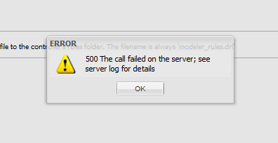

|
This page last changed on Nov 28, 2012 by mbarne36.
Hi
I am playing with Rules.... (rather unsuccessfully  ) )
I pasted some rule text into the Designer Rules Editor (for modeler_rules.drl). When the rule didn't work (watch out for a separate posting!), I tried to remove all of the text from the Editor.
When I then selected "Submit" button, I got this error;

Now, I cannot remove the faulty rule
|
You can try and just leave one commented line.
I think there is a bug which prevents a completely empty textbox.

Posted by mredeker at Nov 29, 2012 08:41
|
|
Marcus,
Any idea when this bug is going to be fixed? Every time I redeploy I am faced with having to manually empty that file in the new deployment then stop and restart the controller. Curiosity can definitely kill the cat in this case. BTW ... I love this project! Finally got my iTach driven stuff working pretty nicely otherwise. Two 7" android tablets (Original Kindle Fire and Nexus 7).
Posted by timbocephus at Feb 18, 2013 12:00
|
|
Sorry can't say.
There was a similar issue reported in JIRA already and I updated that to also include this problem.
This way, we don't loose track of it 
Thanks for reminding us.
Posted by mredeker at Feb 18, 2013 12:19
|
|
I have devised a work-around for this in meantime. I corrected the rules file to a correct touch file (empty) status. Then I've simply set the rules file to RO and all is well with sync'ing and the logging stops spewing the ugly messages. In case anyone else faces this and wants to stop the messages.
Posted by timbocephus at Feb 19, 2013 12:56
|
|
{kind=link}